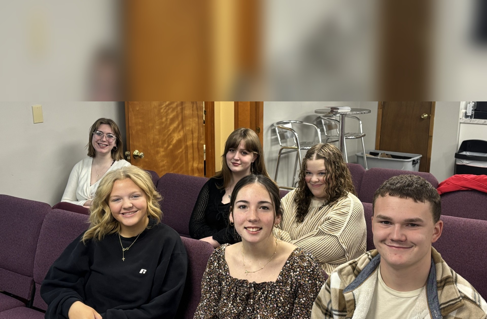
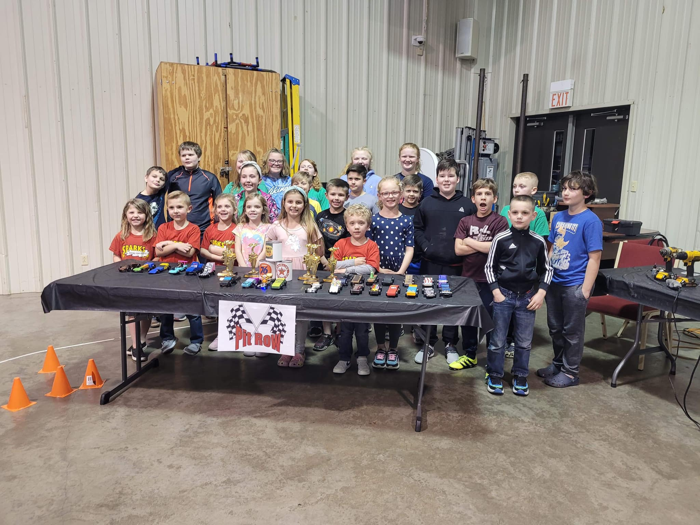
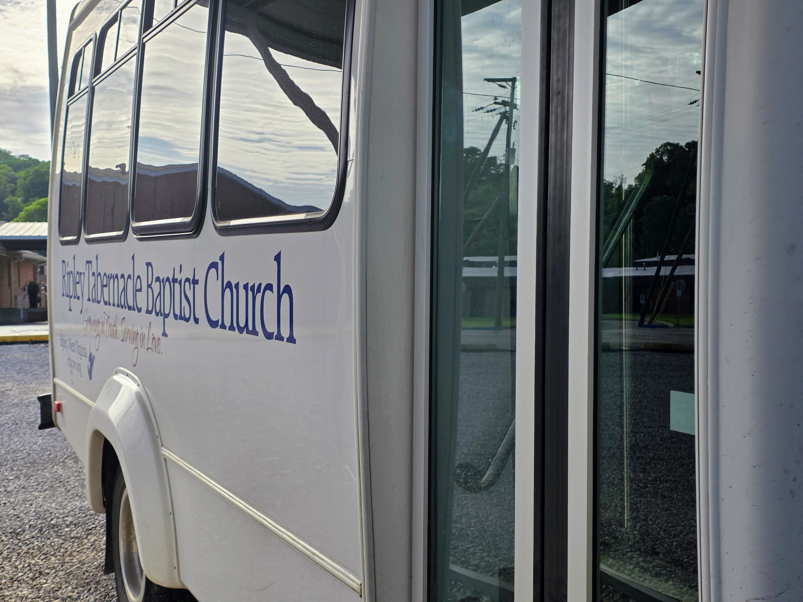

Nurseries
The Infant and Toddler Nurseries provide childcare and biblical teaching during services and special events.
Needed: Nursery WorkersThe Infant and Toddler Nurseries provide childcare and biblical teaching during services and special events.
Needed: Nursery Workers
Sunday School, Junior Church, AWANA, and Creation Club are just a few of the Bible-focused areas for Preschool–6th grade children.
Needed: Preschool Helpers
Sunday School meets at 9:30am on Sundays. The Youth Group meets Wednesday at 7:00pm. Special activities occur year-round.
Needed: Host a Teen Activity
The Kids' Choir practices during the Sunday Evening service and performs regularly throughout the year. The Kids' Choir is open to kids in grades K-6.
No adult volunteer needs at this time
Vacation Bible School is our largest children's outreach of the year. It takes many volunteers to help get the Gospel out to the children of our community.
Needed: Volunteer for 2026 VBS
The Children's Bus Ministry brings children to RTBC on Sunday mornings and Wednesday evenings.
Needed: Substitute driver or start a new route